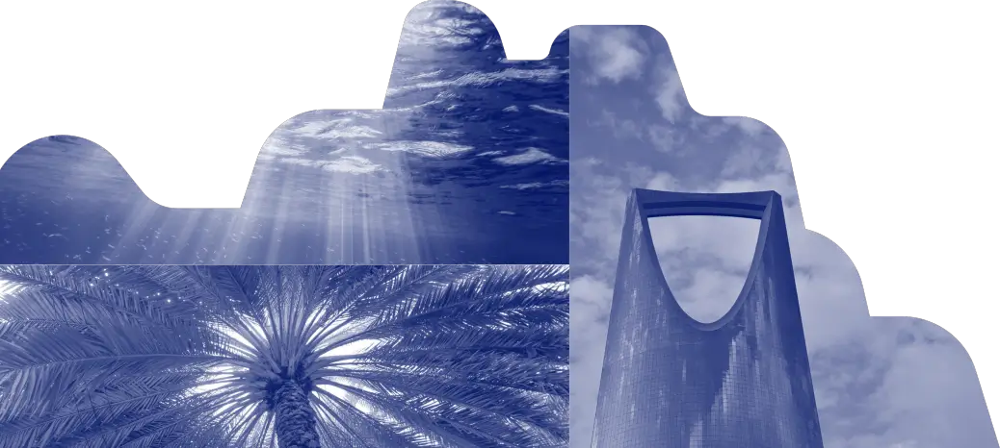
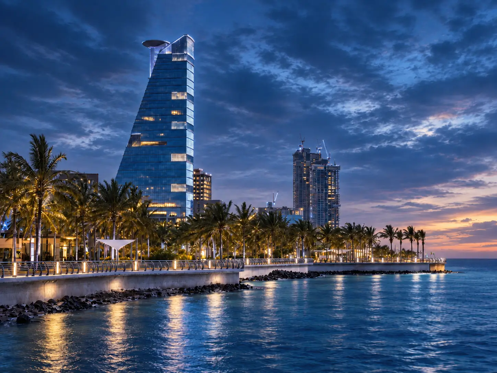
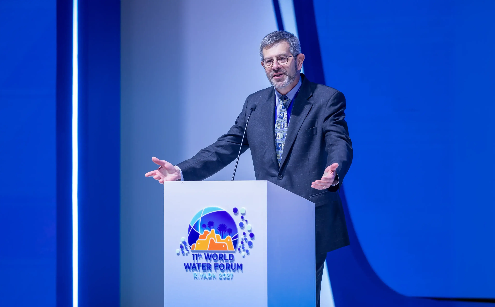
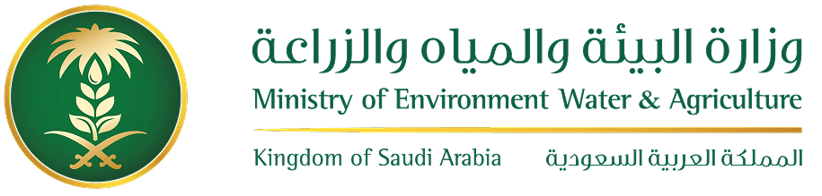
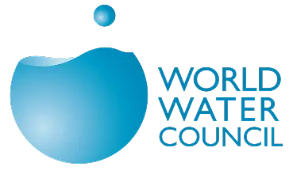

The Road to Riyadh
11th World Water Forum Journey to 2027
Key milestones bringing the global water community together
The Road to Riyadh
Core Processes
Explore the core processes of the 11th World Water Forum
Political Process
Develops policy agendas, declarations, and commitments by engaging ministers, parliamentarians, local and basin authorities. Connects Forum outcomes to the political and finance instruments; amplifies inclusive diplomacy and implementation.
Thematic Process
Mobilizes global multi-stakeholders to design action-oriented solutions. Structured around six themes – Water Security; Water Governance & Diplomacy; Water for Humans & Nature; Water Finance; Innovation for Water; Value of Water. Produces synthesis sessions, policy briefs, and actionable roadmaps.
Regional Process
Anchors the Forum's mission in regional and sub-regional contexts, developing locally relevant roadmaps and case-led cooperation across regions. Bridges communities and global policy for practical uptake.

Global Water Dialogue
Join the Global Water Dialogue
The 11th World Water Forum brings together ministers, delegates, technical experts, and stakeholders to shape the future of global water governance and action.
Latest Updates
View All News
News
Stay informed with the latest announcements, developments, and insights from the 11th World Water Forum

Registration Opens for 2nd Stakeholder Meeting in Jeddah
We are pleased to announce that registration will open on December 15, 2025 for the 2nd Stakeholder Meeting, taking place on April 8-9, 2026, in Jeddah, Saudi Arabia.
Thematic Process Framework Announced
The 11th World Water Forum unveils its comprehensive thematic framework covering 6 themes and 30 topics addressing global water challenges.

Strategic Partnerships with Leading Water Organizations
The Forum announces strategic partnerships with major international water organizations to enhance collaboration and knowledge sharing.
Organizers
The 11th World Water Forum is jointly organized by leading institutions in water governance

Ministry of Environment, Water & Agriculture
The Kingdom of Saudi Arabia's Ministry of Environment, Water & Agriculture (MEWA) serves as the host and lead organizer of the 11th World Water Forum, bringing decades of water management expertise and regional leadership to advance global water security.

World Water Council
The World Water Council is an international multi-stakeholder platform organization whose mission is to mobilize action on critical water issues at all levels, including the highest decision-making level, by engaging people in debate and challenging conventional thinking.